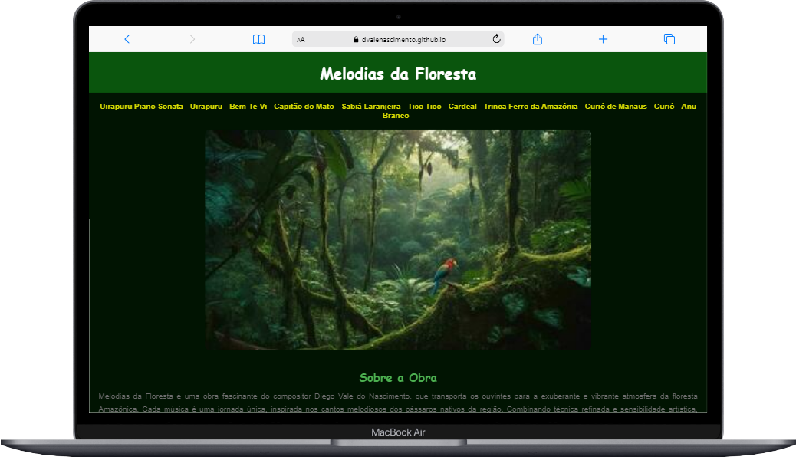
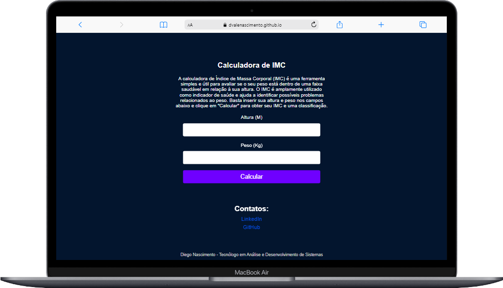
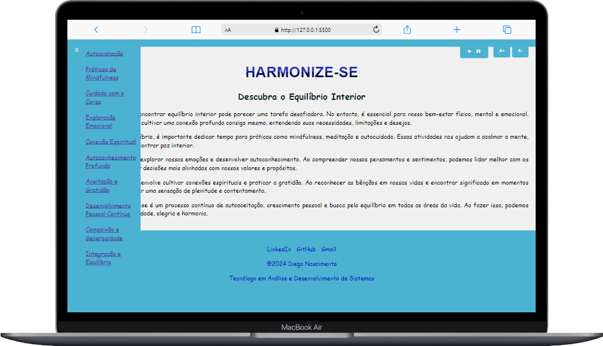

Sobre Mim
Olá! Meu nome é Diego e sou um desenvolvedor web apaixonado por transformar ideias em realidade digital. Tenho habilidades sólidas em front-end, trabalhando com tecnologias como HTML5, CSS3, JavaScript.
Estou constantemente buscando aprender novas tecnologias e aprimorar minhas habilidades para enfrentar desafios cada vez mais complexos. Sou comprometido em fornecer soluções eficazes e de alta qualidade, sempre mantendo a usabilidade e a acessibilidade em mente.
Além do desenvolvimento web, tenho interesse em Back-end. Estou disponível para novos desafios e ansioso para colaborar em projetos inovadores.
Projetos

Projeto Melodias da Floresta
Desenvolvido inteiramente com HTML, CSS e JavaScript, o projeto demonstra como a tecnologia pode ser empregada para conectar as pessoas à natureza por meio da música.O "Projeto Melodias da Floresta" é uma iniciativa que integra música, natureza e tecnologia para oferecer uma experiência singular aos usuários. A plataforma apresenta composições musicais inspiradas nos cantos de pássaros nativos da floresta brasileira. Além disso, disponibiliza partituras em PDF para os interessados em estudar ou reproduzir as melodias.

Projeto Calculadora IMC
Aplicação web que calcula o Índice de Massa Corporal. Desenvolvida utilizando HTML, CSS e JavaScript, essa ferramenta oferece uma interface intuitiva para calcular o IMC do usuário. Com uma apresentação visual atraente e interativa, a aplicação fornece classificações e orientações de saúde com base no IMC calculado. Essa integração de HTML, CSS e JavaScript permite uma experiência de usuário dinâmica e responsiva, onde o usuário pode inserir seu peso e altura e obter rapidamente seu IMC.

TaskTime Pro
TaskTime Pro é uma aplicação de temporizador Pomodoro desenvolvida para ajudar na gestão do tempo e na melhoria da produtividade. O projeto foi desenvolvido utilizando HTML, CSS e JavaScript. Aplicação intuitiva que ajuda a dividir o tempo em períodos de trabalho concentrado e intervalos de descanso regulares, permitindo que você mantenha o foco e maximize a sua eficiência. Com recursos visuais e sonoros, fica mais fácil acompanhar as suas sessões de trabalho e garantir um ritmo produtivo ao longo do dia.

Harmonize-se
Este projeto consiste em um site denominado "Harmonize-se", que visa promover o equilíbrio interior e o bem-estar físico, mental, emocional e espiritual. Através de conteúdos relacionados a práticas de mindfulness, autoconhecimento, cuidado com o corpo, conexão espiritual, entre outros, o site oferece uma abordagem holística para alcançar uma vida mais equilibrada e harmoniosa. As principais funcionalidades do projeto são: Sidebar Navegável (Barra Lateral), Leitor de voz para facilitar a acessibilidade do conteúdo e Controle de fonte (aumentar ou diminuir o tamanho da fonte do texto).